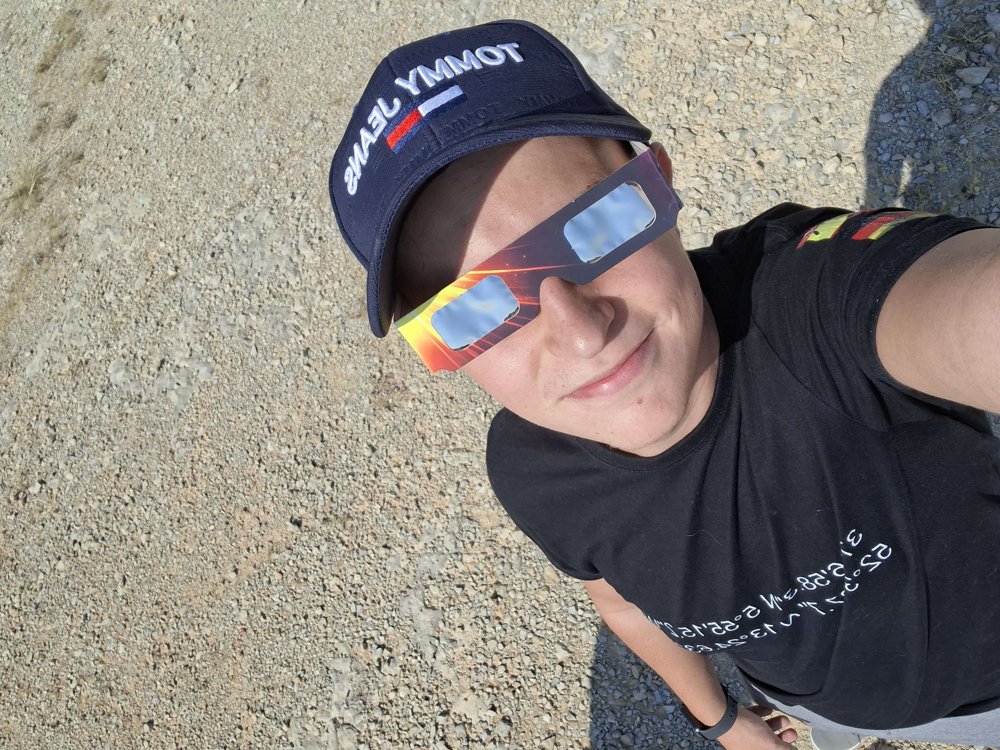

Guillermo Jiménez Ramírez
Arquitectura Web & CiberseguridadGuillermo Jiménez Ramírez es un profesional formado en la prestigiosa Universidad de Sevilla, obteniendo su doctorado en Ingeniería de la Ciberseguridad. Allí perfeccionó sus habilidades en protección digital. Impulsado por una profunda pasión por la astronomía, decidió unir fuerzas con su gran amigo Alfonso para dar vida a un proyecto único. Juntos crearon esta innovadora página web, fusionando un entorno digital totalmente seguro con la fascinación por el cosmos. Hoy en día, lidera el desarrollo técnico de la plataforma para asegurar que la comunidad astronómica explore el universo de forma segura.